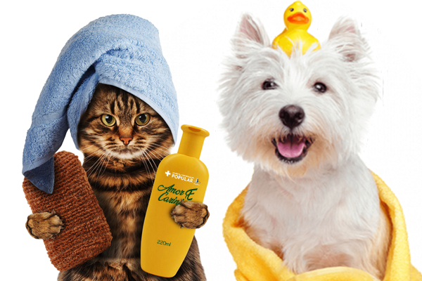

Atendemos todos os pets no setor banho, com especialistas em cada espécie para que possamos oferecer
o melhor para o seu pet. Indicamos um banho completo para novos pets, pois a esterilização do mesmo é de extrema importância
para ele e para vocês, donos. Através do banho conseguimos garantir-los tratamentos naturais e hidratação, além de deixar-los
cehriososíssimos.
Toalhas esterilizadas e embaladas individualmente ajudam, ainda mais, a manter a proteção dos cachorros que ainda não tomaram todas as doses necessárias de vacina para garantir a proteção da saúde.
E vale lembrar que, além de promover a limpeza e a higiene do pet, os banhos na fase inicial da vida dos cães também são uma ótima maneira de acostumá-los com o processo, de uma forma geral –
evitando qualquer tipo de medo ou desconfiança do pet ao passar por esse tipo de processo no futuro.

Temos a tosa higiênica, feita por especialistas, tanto à mão quanto por máquinas. Planejado, este processo
específico tem a higiene do cachorro como objetivo principal, direcionando o corte dos pelos do bichinho para as áreas que apresentam as maiores
chances de problemas pelo acúmulo de sujeira na pelagem, como barriga, patas, orelhas e regiões íntimas.
Oferecemos também o corte de unha. Este hábito é um cuidado fundamental com os pets, porque evita que as unhas fiquem presas em pisos, tapetes e carpetes, o que pode gerar encravamento, sangramento e até a remoção da unha presa, causando dor e desconforto no animal.
Para seu conforto, nossos parceiros profissionais que realizam o banho e tosa também oferecem o serviço de busca e entrega do seu pet.

Os animais são transportados com foco na segurança, com caixas específicas para seu tamanho e peso
assim, o seu querido pet é transportado de forma segura e confortável. Assim como o transporte deles, o nosso também
garante conforto e segurança, para que todos possam chegar seguros a seu destino, damos preferência para carros como o Doblô, Pálio Weekend, Renault Sandero e Peugeot Boxer Furgão.

Oferecemos um dos melhores hotéis pet de toda a região, com bebedouros, ração, área para brincar com outros pets
consultas veterinárias, supervisão a todo momento, limpeza completa duas vezes ao dia e muito mais! Trabalhamos com reservas,
então se sempre indicamos agendamento com antecedência, para que seu pet consiga tirar o melhor proveito de todo a programação do hotel.
Fazemos o adestramento da melhor forma possível, longe de usar a força e a ameaça, mas sim o carinho
e ensinando com calma, para que o seu pet possa aprender a seguir comando basicos como os simples "levanta, vem, senta,
deita, agora não" e muito mais. O importante é deixar claro para o pet que todos no ambiente gostam dele, deixando-o mais
confortável para te obedecer. Para isso, temos também profissionais com alto treinamento, para que ele continue o mesmo dentro
da sua casa, sempre respeitando e obedecendo à seu dono.
O passeio é algo fundamental na sua relação com o seu pet. O passeio faz seu pet gastar mais energia,
aflora seu instinto natural, diminui o estresse e a ansiedade, queima calorias e previne a obesidade, aumenta a socialização,
cria vínculos com o tutor, marca novos territórios, além de você, o dono, conseguir se exercitar junto a seu pet.